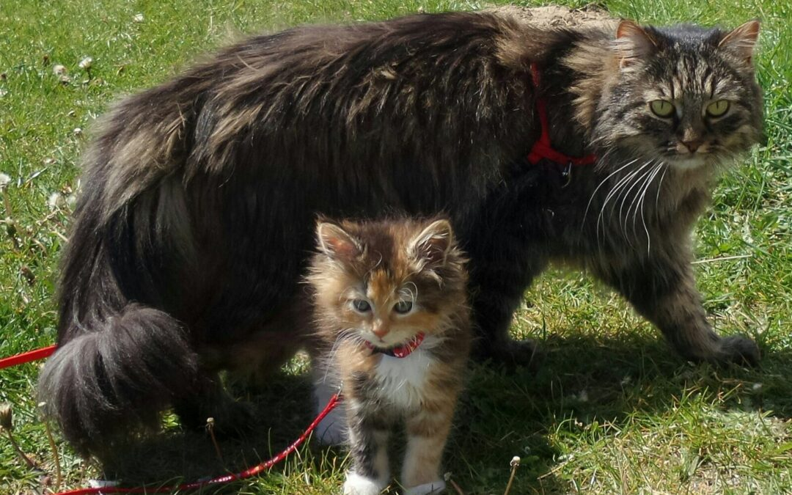
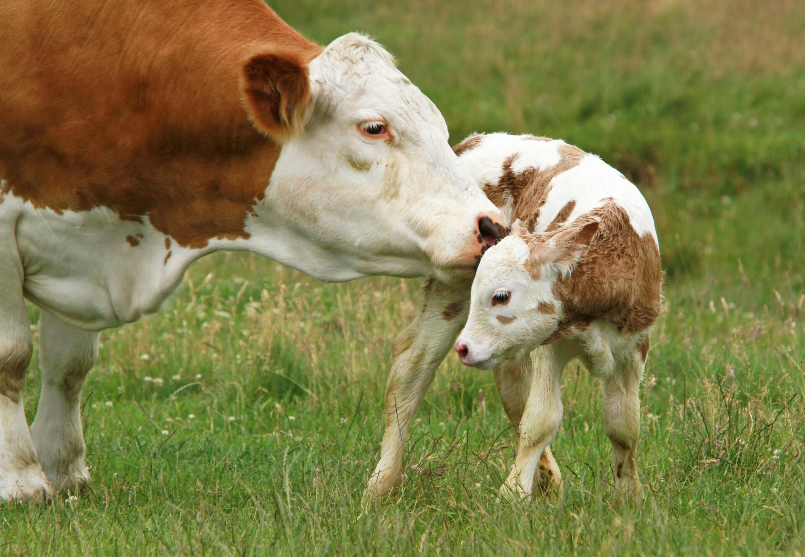
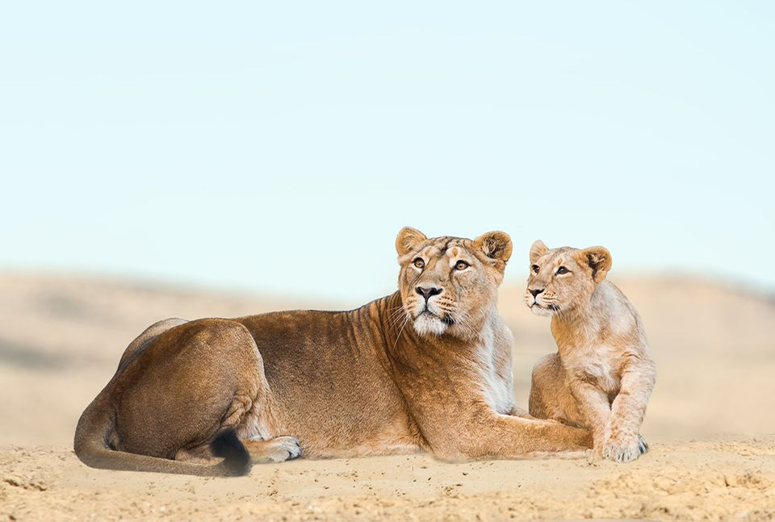

Mammals are vertebrates that suckle their young with milk and almost all
give birth to live offspring. They also have fur, a constant body temperature,
and a spine. The name "mammal" derives from the fact that they suckle their
offspring with milk, which is produced by the mother's mammary glands.



Can you keep them as pets?
Yes, you can keep many mammals as pets, most of which are domesticated animals
like dogs, cats, and rabbits, as well as smaller animals like hamsters, guinea pigs,
and gerbils. Some wild or exotic mammals, such as certain wild cats, primates, and
even some canids like foxes or wolves, are sometimes kept as pets, but this is often restricted
by law and not recommended due to the challenges of owning a wild animal.